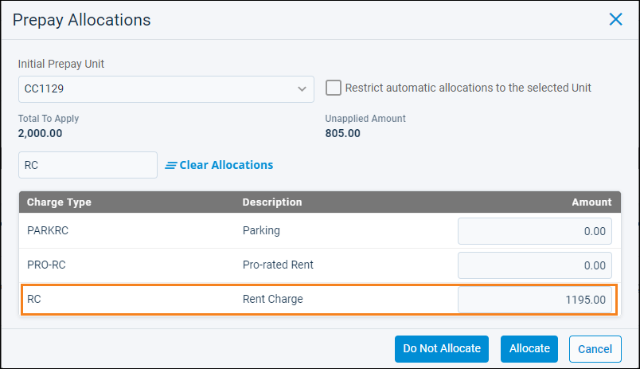

Source: https://rmxhelp.rentmanager.com/Topics/Express/KB/Transactions-Prepayment-Setup.htm
Set Up Prepayment Preferences
Rent Manager allows prepayments to be recorded in one of two ways: preallocated or unallocated. Depending on your accounting practices, you can decide how Rent Manager handles these prepayments. The following sections outline the system accounts and system preferences you can select to record these prepayments.
| Prepayment Method | Description |
|---|---|
|
Preallocated |
When a prepayment is preallocated to a specific charge type, Rent Manager automatically applies the payment to any future charges of that type that are posted to the tenant. To apply this prepayment to any other type of charge, you must override the original allocation on the Payments tab. |
|
Unallocated |
When a prepayment is left unallocated, Rent Manager automatically applies the payment to any future charge posted to the tenant. |
When a prepayment is entered in Rent Manager, you can choose to allocate it to a charge type in the Prepay Allocations pop-up or leave it unallocated.

Cash Basis Accounting
In cash basis accounting, financial statements are impacted as soon as a tenant payment is received, even if there is not an associated charge for the payment. In the case of tenant prepayments, you need to tell Rent Manager what to do with the prepayment until a charge is applied. The following sections explain the different prepayment system preferences and settings and their impact on your financial reports.
General Ledger System Preference
The system preference Record cash preallocations as a liability instructs Rent Manager to hold a preallocated prepayment in a specified system account until the associated charge has been applied. This preference affects how the prepay shows on financial reports like the Balance Sheet, Profit & Loss, and Owner Statements.
When this option is disabled, Rent Manager records the preallocated prepayment using the charge type's GL account.
Warning
Please speak with your accountant about the financial implications of recording prepayments using the charge type's GL account to ensure this is the best course of action for your business.
To hold a preallocated cash prepayment in a specified system account until the associated charge is applied, do the following:
-
Go to
 arrow_forward
arrow_forward  Administration, then select .
Administration, then select . -
Check Record cash preallocations as a liability. Select this option even if you want the preallocated prepay recorded as income.
-
Click Save.
With this option enabled, all prepayments are recorded in the Cash prepay liability account selected in System Accounts system preferences. Making a change to this preference does not change the way historical transactions were recorded. Any change only affects future payments.
General Ledger System Account
For both preallocated and unallocated cash prepays, you need to determine what system account you want Rent Manager to hold the funds in until a charge is posted. To select that account, do the following:
-
Go to
arrow_forward Administration, then select . -
From the Cash prepay liability account drop-down list, select your preferred prepaid account, which can be either a liability (e.g., Unearned Income) or an income account (e.g., Prepaid Income). For both preallocated and unallocated cash prepays, you need to select a system account.
Warning
To prevent inaccuracies in your financial records, it is considered a best practice not to use the charge type's GL account (e.g., Rental Income) as the system prepay account.
-
Click Save.
Prepayments are held in this system account and reported as a liability on the Balance Sheet or as income on the Profit and Loss. Making a change to this preference does not change the way historical transactions were recorded.
Accrual Basis Accounting
In accrual basis accounting, financial statements are impacted as soon as you add a charge, even if it is not yet paid. In the case of tenant prepayments, you need to tell Rent Manager what to do with the prepayment until a charge is added. The following sections explain the different prepayment system preferences and settings and their impact on your financial reports.
General Ledger System Preference
The system preference Record accrual prepayments as a liability instructs Rent Manager to hold a prepayment (either preallocated or unallocated) in a specified system account until a charge has been applied. This preference affects how the prepay will show on financial reports like the Balance Sheet, Profit & Loss, and Owner Statements.
When this option is disabled, Rent Manager records the prepayment as a credit to your Accounts Receivable GL account.
Warning
Please speak with your accountant about the financial implications of recording prepayments in your Accounts Receivable GL account to ensure this is the best course of action for your business.
To hold the accrual prepayment in a specified system account until a charge is applied, do the following:
-
Go to
arrow_forward Administration, then select . -
Check Record accrual prepayments as a liability. Select this option even if you want the prepay recorded as income.
-
Click Save.
With this option enabled, all prepayments (either unallocated or preallocated) are recorded in the Accrual prepay liability account selected in System Accounts system preferences. Making a change to this preference does not change the way historical transactions were recorded. Any change only affects future payments.
General Ledger System Account
Next, you need to determine what system account you want Rent Manager to use as your Accrual prepay liability account. To select that account, do the following:
-
Go to
arrow_forward Administration, then select . -
From the Accrual prepay liability account drop-down list, select your preferred prepaid account, which can be either a liability (e.g., Unearned Income) or an income account (e.g., Prepaid Income).
Warning
To prevent inaccuracies in your financial records, it is considered a best practice not to use the charge type's GL account (e.g., Rental Income) as the system prepay account.
-
Click Save.
Prepayments are held in this system account and reported as a liability on the Balance Sheet or as income on the Profit and Loss. Making a change to this preference doesnot change the way historical transactions were recorded.